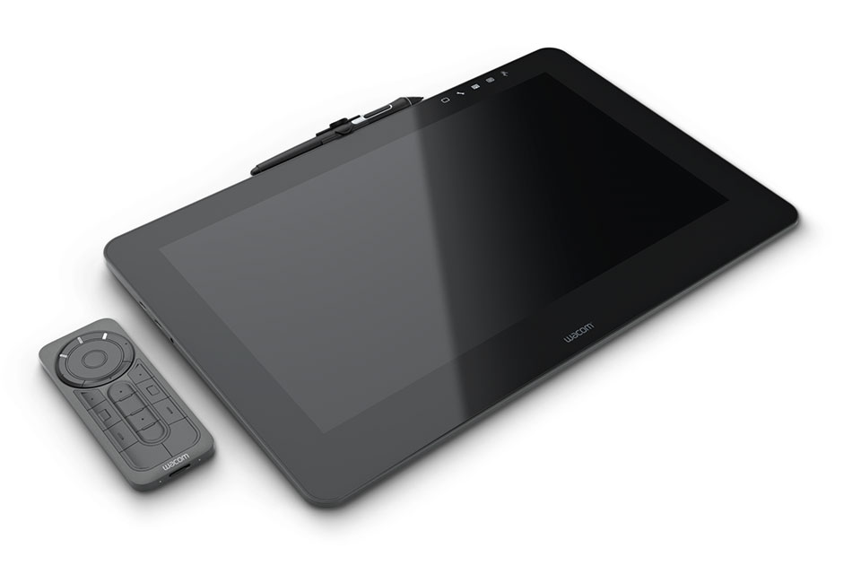

THE CINTIQ PRO
Create directly on screen with our most natural pen experience ever.
Wacom Cintiq Pro is designed for professional artists and designers who demandan intuitive, pen-on-screen connection to their work. Whether you work on Mac or PC,
Wacom Cintiq Pro featuring Wacom Pro Pen 2 is our most advanced creative pen display.
Live. Dare. Create.
Wacom Cintiq Pro 13
1920 x 1080pxAdobe® RGB 87%
Wacom Pro Pen 2 technology
A compact, more portable device – perfect for sketching and drawing.
Wacom Cintiq Pro 16
3840 x 2160pxAdobe® RGB 94% (CIE 1976)
Wacom Pro Pen 2 technology
A broader canvas with a more detailed display – ideal for painting and retouching.
Wacom Pro Pen 2: Natural and Precise
Wacom Cintiq Pro comes with our new Wacom Pro Pen 2 – more accurate,sensitive and responsive than ever. Our state-of-the-art creative pen technology.
8,192 levels of pressure sensitivity and unparalleled tilt recognition means that
every stroke, every move of your hand is followed with unerring accuracy.
It's our best pen yet.

Designed for the way you create
As a creative professional, time’s rarely on your side. That’s whyWacom Cintiq Pro puts productivity solutions right at your fingertips.
CONNECT YOUR WAY
Connect to any Mac or PC with a single USB-C cable (included) to a USB-C port for both video and data. Or use the included Wacom Link adaptor to connect to a mini DisplayPort (video) and standard USB port (data).MAKE IT MATCH YOU
Customizable ExpressKeys™* and Radial menu's* mean that Wacom Cintiq Pro can be quickly configured to fit seamlessly into your workflow.*Sold separately.